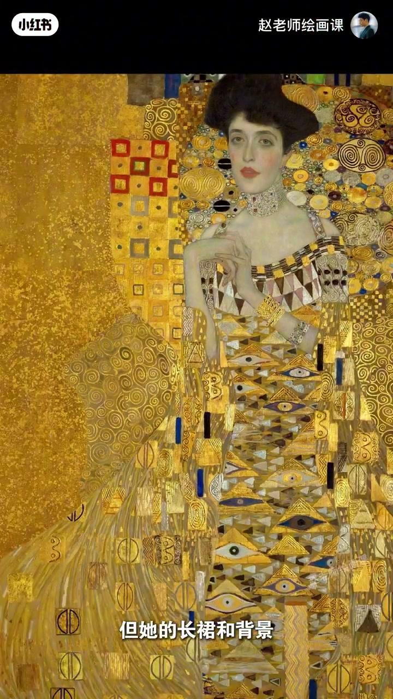
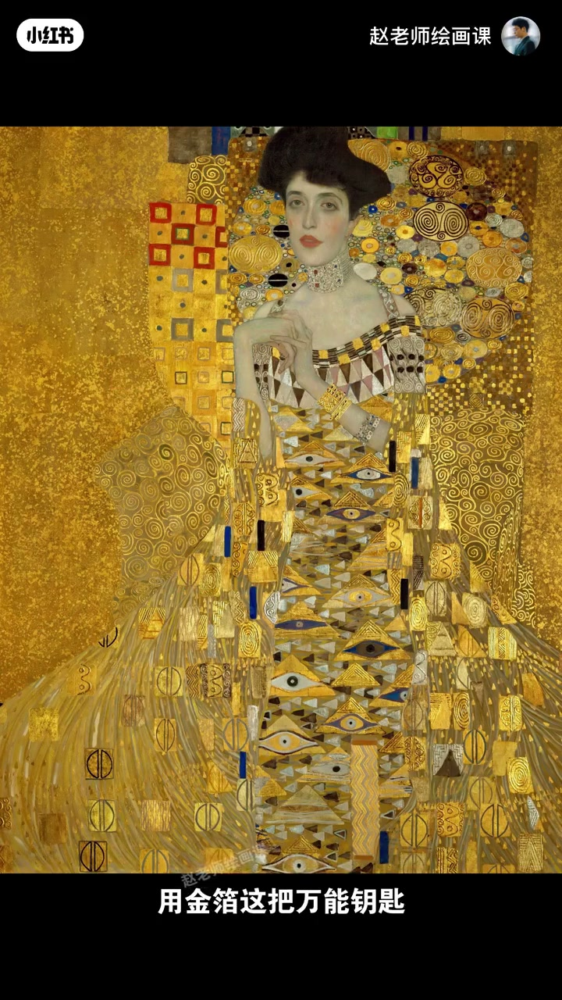
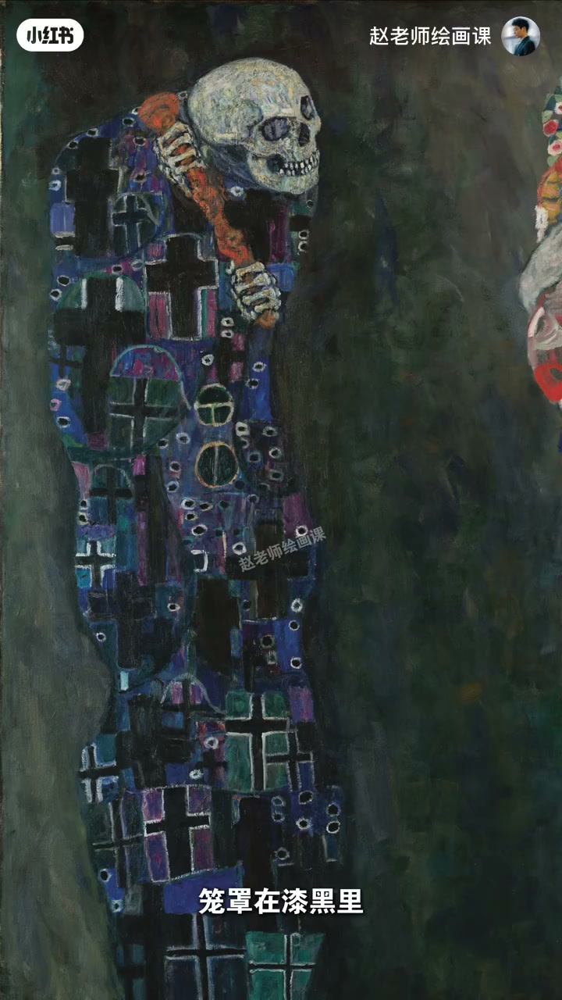
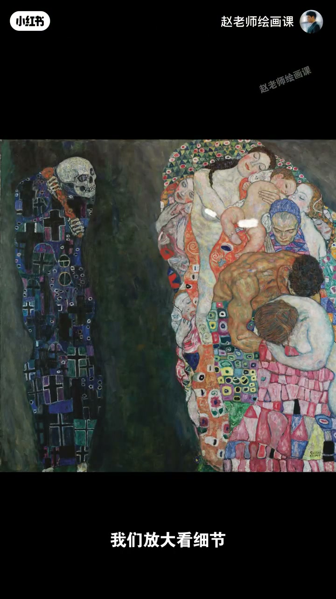

内容要点
古希腊纹样、东方装饰、写实人脸、抽象几何与金箔塞进同一幅画却不乱——克里姆特道破法则：真正的美源于变化之中的统一。《金色阿黛尔》用金箔这把万能钥匙统一写实与抽象、金银与圆方，重复眼睛与螺旋如旋律归位和谐；《死亡与生命》在极端对立中用曲线、花点、淡蓝影与微弱暖光互相渗透，证明生与死如硬币两面。
知识结构
变化之中的统一；金箔统一多元元素；重复符号如旋律。
对立不分裂：暗曲线↔柔软躯体；花点↔几何；明入淡蓝、暗点暖光。
变化可以极致，但要用同一「钥匙」（材料／母题／呼应）把对立收束成统一，否则只会花乱。
00:00-01:08金色阿黛尔：金箔统一万象
开场列举可塞进同一画的元素：古希腊纹样、东方装饰、写实人脸、抽象几何、奢侈金箔——结果不乱反美。真正的美源于变化之中的统一。代表作《金色阿黛尔》：脸与手臂细腻逼真，长裙与背景彻底融入闪烁金色。
写实、抽象、金色、银色、圆形、方形……克里姆特用金箔全部统一；重复出现的眼睛、螺旋像音乐重复旋律，把整幅画拉回和谐。00:40／00:55 是金箔统一的直观证据。


01:08-02:16死亡与生命：对立中的渗透
更厉害的在《死亡与生命》：左死亡漆黑戴十字架眼神空洞，右生命温暖缠绕从婴儿到老妇。极端对立却未彻底分裂——死亡长袍幽暗曲线呼应生命柔软躯体，生命花朵圆点与死亡几何符号隐隐相连。
生命明亮处参入淡蓝阴影，死亡黑暗里点上一星微弱暖光。画面说：生与死如硬币两面始终相生。在极致变化中追求极致统一，即金光背后的视觉密码。


完整转录（66段）
以下文本由 Whisper medium 模型自动转录，可能存在少量识别误差，已尽可能修正。
你敢想象吗?
一位画家能把古希腊文样
东方的装饰
写实人脸
抽象的几何
甚至是奢侈的金箔
全都塞进同一幅画里
结果不但不乱
反而美到窒息
这个人就是古斯塔夫·克利姆特
他的画早在一百年前
就盗破了一个顶级的审美法则
真正的美
源于变化之中的统一
我们来快速破解他的视觉密码
这是他的代表作
也就是那幅金色阿戴尔
来看这里
阿戴尔的脸和手臂画得细腻又逼真
但他的长裙和背景
却彻底融入了闪烁的金色
则复杂的图案中
写实
抽象
金色
银色
圆形
方形
这么多丰富的元素
克利姆特用金箔这把万能钥匙
把它们全部统一了起来
再加上那些重复出现的眼睛
螺旋这些装饰符号
就像音乐里的重复旋律
把整幅画归回了和谐
更厉害的在这里
死亡与生命
左边是死亡
笼罩在漆黑里
戴著十字架
眼神空洞的让你发凉
右边是生命
人们温暖地缠绕在一起
从婴儿到老妇
仿佛承载著人类全部的情感旅程
这明明是最极端的对立了吧
但克利姆特却并没有让他们彻底分裂
我们放大看细节
死亡长袍上的幽暗曲线
是不是悄悄地呼应著生命的柔软躯体
生命之中的花朵圆点
是不是也和死亡那边的几何符号
隐隐相连
它甚至让生命的明亮处
参入一丝淡蓝的阴影
死亡的黑暗里
也点上了一星微弱的暖光
它用画面告诉我们
生与死本就像硬币的两面
始终相生相伴
在极致的变化中
追求极致的统一
这就是克利姆特
藏在金光背后的视觉密码
欢迎关注我即将上线的构成系统课
下期见了 拜拜